Un poco de el porque
Holaa, se que es un poco inesperado pero me tome la molestia para hacerte esta pagina para decirte lo que no he podido y que me
encantaria hacerlo, entonces que mejor idea que con esta pequeña sorpresa jsjs
Tambien quisiera pedirte una disculpa por atrasarlo tanto
no quisiera ponerme excusas pero es que la escuela me esta ocupando demasiado tiempo, en realidad realidad si cuento con muy poco tiempo libre
ya que estoy ya en el semestre "profesional" y me estoy enterando de cosas que son muy dificiles de procesar que hace que cada noche llegue con
un dolor de cabeza impresionante, aun que con todo eso me gustaria hacerte este tipo de detalle sabes, y te digo eso lo del tiempo por que
entre esas horas libres que tengo, son demasiados los pendientes una lista de no acabar casi casi jaja
Pero entre ese hueco de las cosas intente hacerte esto, pues hace poco vi lo que podia hacer en html (el lenguaje de programacion para paginas web)
y me emocione y me meti a bastantes videos de horas, y esto fue lo que aprendi. Queria hacerte algo con lo poco que se por ahora, pero si en un futuro
no sé, llegara pasar algo bueno, quisiera hacerte otra vez una, pero con todo lo que llevo aprendido.
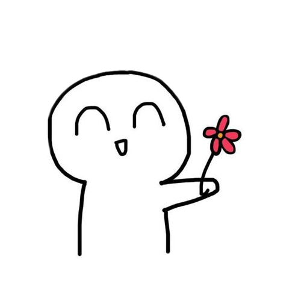
Aun que se que tal vez te incomode y espero no hacerlo ya que no es para nada mi intencion, mi verdadera intencion es querer hacerte
saber las cosas y que sepas un poco lo que pienso y siento
Lo e estado pensando mucho y me e dado cuenta que a mi corta edad que la vida, los momentos, las personas se van muy rapido como
para estarte arrepintiendo por cosas que no pudimos hacer y estarte sobreepensando sobre el que hubiera pasado, mi mentalidad a
cambiado a una forma de no "dejar ir" las cosas si puedes, "Si extrañas a alguien ve por esa persona" "Si tienes ganas de estar
con alguien, ve y dicelo". Quiero vivir una vida de acuerdo conmigo mismo y sabiendo que hice lo que pude con lo que tuve sin
arrepentirme.
Una vez, bueno de las primeras veces que jugue Civilization me sorprendio bastante las filosofias de bastantes personajes
historicos, a mi en particular me gusta mucho un personaje que se llama Teddy Roosevelt y a mitad tiene un dialogo en su
biografia, una frase que es muy profunda pero muy simple y significa algo asi: Haz lo que puedas, donde estes, con lo que
tienes y no te preocupes por lo demas.
Asi que por eso estoy intentando hacer lo que pueda con lo que tenga, quiero sentir que si di el 100% y pues en realidad me
importas y aunque no sea mucho lo que hago o sea la gran cosa, vienen de mi especialmente para ti y si asi puedo sacarte
aun que sea una sonrisa, una risa, o alguna emocion buena, me haria la persona mas feliz.
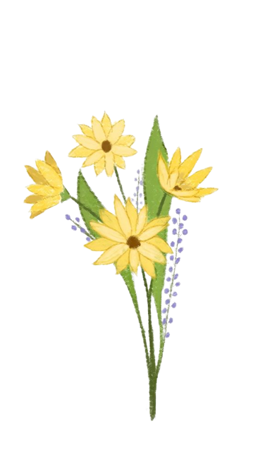
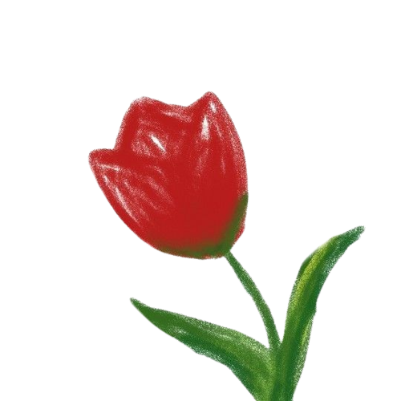
♡ Un poema para ti ♡
No puedo darte la luna en tus manos,
pero seré tu compañía en los claros más lejanos.
No puedo alejar tus tristezas y dolores,
pero juntos enfrentaremos todos los temores.
Quizás no posea el mundo en mis manos,
pero te entrego lo mejor de mis años humanos.
Estaré a tu lado, en cada paso y cada instante,
como un amor eterno, constante y vibrante.
No bajaré la luna, pero en mis ojos encontrarás
reflejado el brillo de estrellas que nunca se irán.
Seré el abrazo cálido que te envuelve en calma,
y la melodía que en tu corazón siempre se desarma.
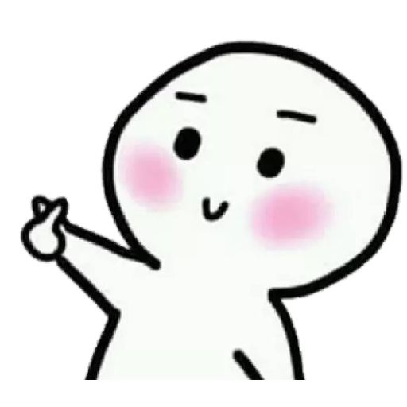
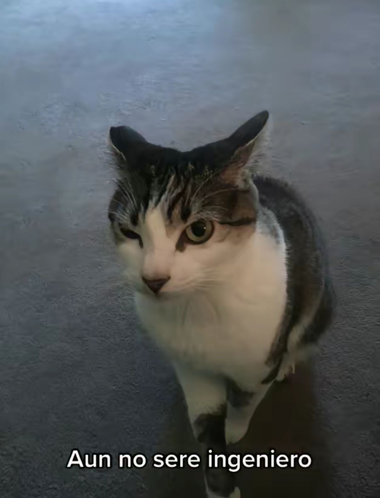
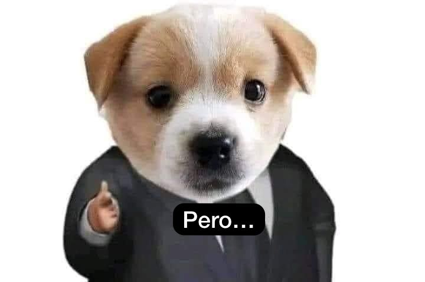
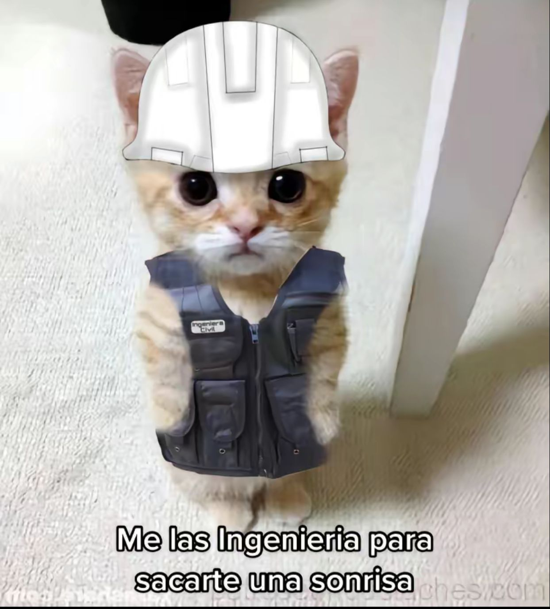
♡ Me gustaria hablarte ♡
Respecto lo que te dije antes sobre Teddy Roossevelt, debido eso estoy intentando hacer lo que pueda con lo que tenga, quiero sentir que si di el
100% sabes, me importas y aun que no sea mucho lo que hago o sean la gran cosa, vienen de mi y especialmente para ti y si asi puedo sacarte una sonrisa. unca risa o alguna emocion positiva,
me hace la persona mas feliz
Vi una carta "basada" en un manga que me gusto y quisiera dedicartela:
"Y es cierto, que cuando llegaste a mi vida
he sentido esa calidez que anhelaba, esa
comprension que necesitaba, ese cariño
que añoraba. Es dificil creer que quieras
darme tu corazon, a mi, alguien que se
encuentra roto y que no entiende muchas
cosas acerca del amor, pero es lindo
tenerte a mi lado, tu voz es tan dulce
para mis oidos y mi corazón se acelera
en pensar en ti, eres muy cálida, tanto que
siento que podria quemarme en algún
momnento, pero no me importaria hacerlo
" Se mi unico amor " "
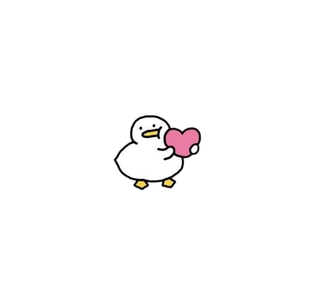
Y esto significa tal cual como son para mi las cosas, desde que entraste en mi vida... el poco tiempo senti esa "calidez" aunque no pudo ser fisica, fue emocionalmente... Fuiste esa
calidez que tanto soñe, eso que me hace sentir tan raramente tranquilo
La comprension y atencion que necesitaba y ese cariño que soñe todo eso es lo que me brindaste y mas, y como siempre
e sido desconfiado al momento de "encajar" con alguien siempre me parecio imposible que alguien.... bueno como tu, quisiera compartir conmigo en su momento, alguien a quien
aun no comprende muchas cosas del amor o relacionado a este, pero se queria aventurar a aprenderlas contigo, y es lindo tenerte a mi lado, aunque no sea conmigo, tu voz siempre me a parecido de las mas dulces y calidaz para mis oidos que
cada vez que las escucho es como si llegara paz o transmitiera tranquilidad en mi.
Eres como la primera flor que florece en medio de un valle, aun sin saber el como y el porque estas ahi, al verte
sabes que un camino hermoso esta por surgir, eres muy calida en verdad y es dificil de explicarlo, pero se que sin aun "verte" lo eres
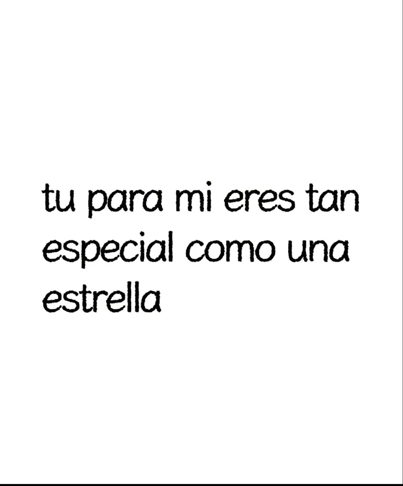
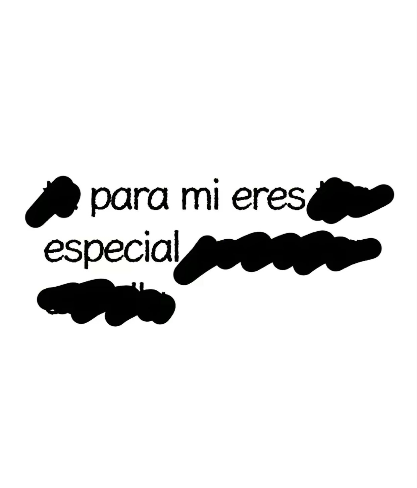
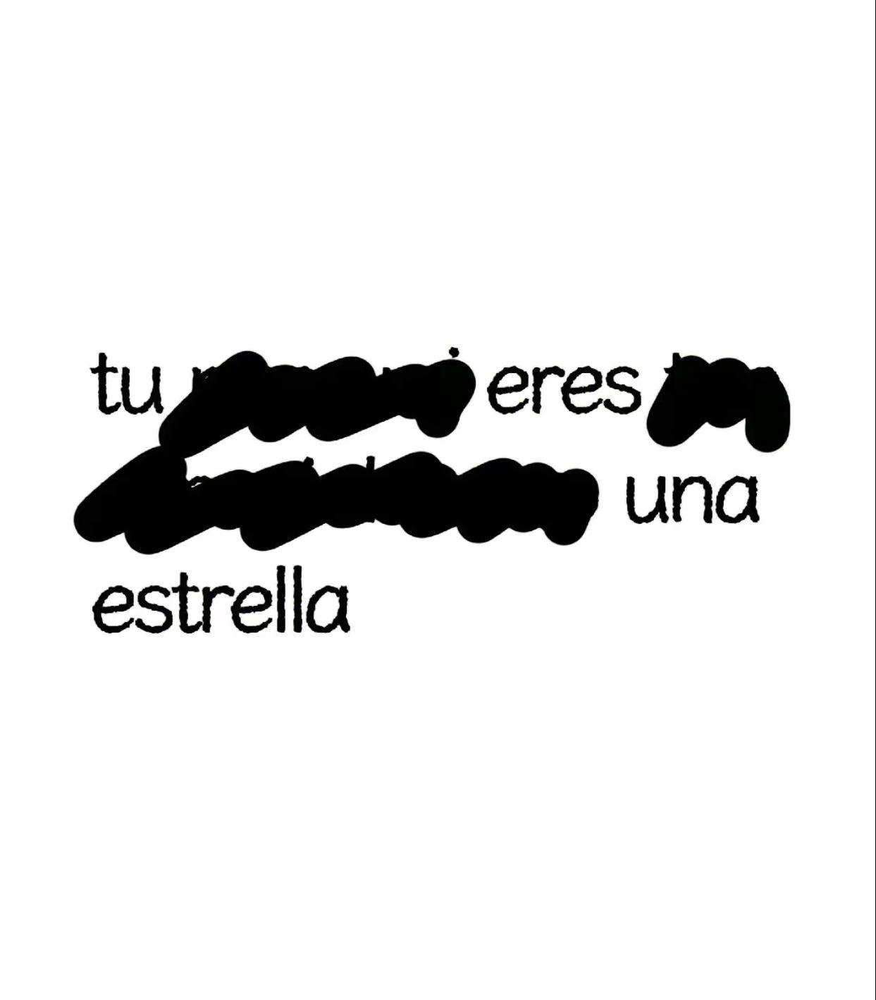
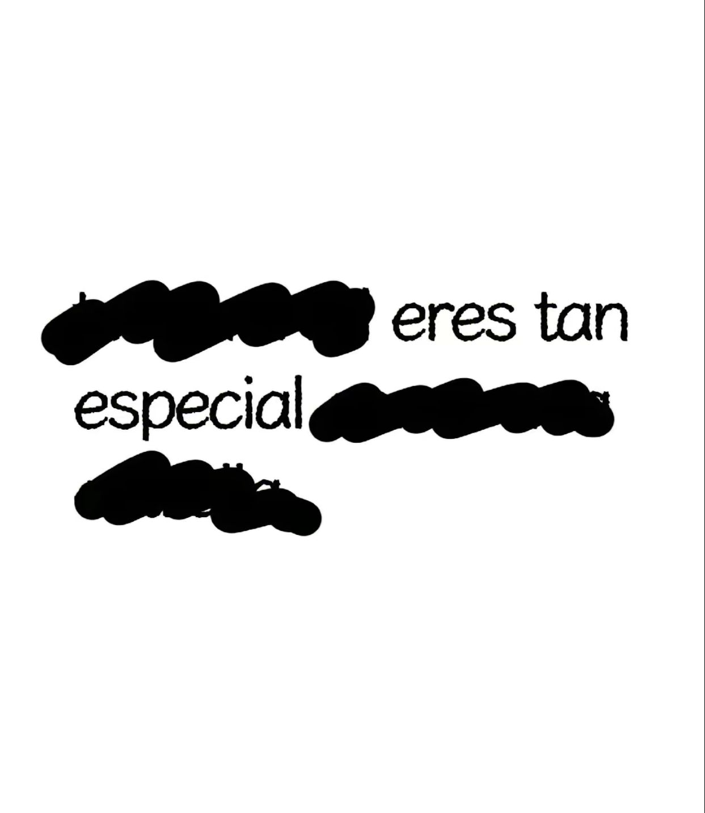
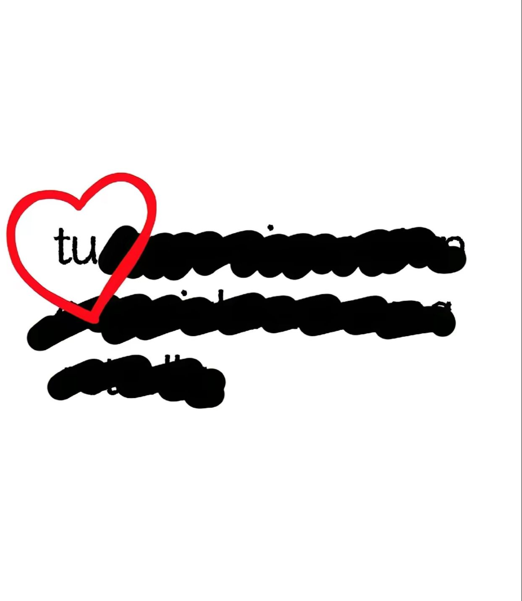
Estas imagenes hablan por si mismas, pero si tuviera que añadir algo, añadiria este poema:
¿Tu?
Tu eres esa persona cual no me arrepentiré de haber
conocido y de haber dejado
entrar a mi vida, gracias,
por tanto, perdón por
tan poco
Tal vez conocerte vanessa pudo ser cuestión de suerte
o una simple coincidencia, pero prefiero
interpretarlo como una
especie de regalo? que dio la vida, un regalo que llevare en mi mente siempre
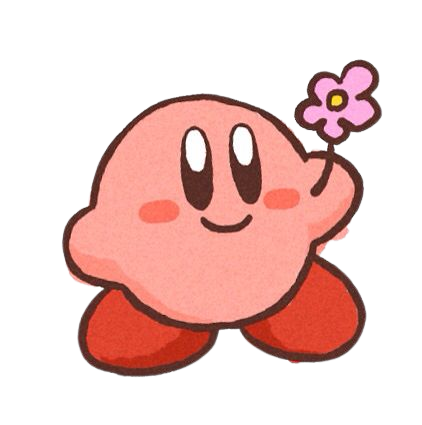
La verdad siento un poco de panico al hacer esto, bueno no tanto asi pero a lo que me refiero es que
bueno, yo siempre me e confiado mucho
al hacer cosas porque mi "intuicion" "instinto", como quiera que se le deba llamar, ambos me decian que podia pasar algo y ya con eso
yo me hacia planes y planes pero con respecto contigo no me da nada, es como si me dijera que no sabe que pasara... y no puedo pensar en planes y me da un poco
de miedo, tengo la costumbre siempre de estar preparado con un plan, adelantarme y saber las cosas que podrian pasar o incluso las que no, pero ahora
que no tengo ninguno, siento miedo al no esperar ningun resultado, pero me puse a pensar mucho
¿Cuantas cosas no me arriesge o deje de hacer por miedo?
Y la verdad sea cual sea el resultado/desenlace/conclusion, solo quiero abrir mi corazon y decirte lo que tenga que decir, pero atemorizado
Me importas mucho como para perderte sin hacer nada, o quedarme sin hacer nada
se que no lo parece o no lo parecio, se que no soy perfecto, pero realmente
me estoy esforzando para ser es persona que tu te mereces, una persona que pueda "ser digno" de ti,
una persona que valga la pena o que valga el intento.
Y es que... quiero que seas tu, solamente tu.
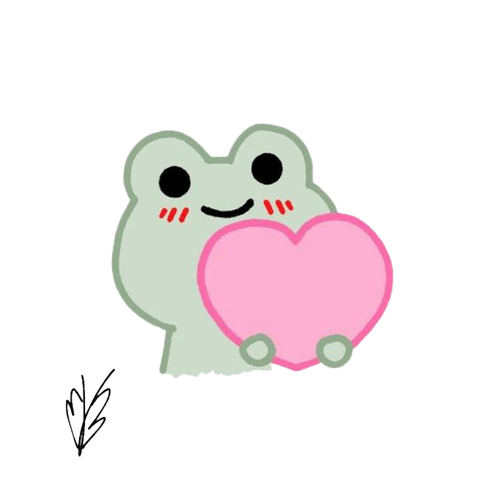
Te hice un poema, espero te guste:
En el jardín de tus palabras,
brota una dulzura sin igual,
cada vez que escucho tu voz,
mi corazón empieza a volar
Es como un susurro de ternura,
que acaricia el viento con suavidad,
y cuando llega a mis oídos,
todo se llena de felicidad
Tu voz es un canto sereno,
que calma mi mente y mi ser,
en cada palabra que pronuncias,
encuentro un motivo para querer
Es como un río apacible,
que me guía hacia la calma,
con cada sonido que emana,
mi alma se envuelve en tu encanto
Tu voz tiene el poder mágico,
de serenar hasta la tormenta,
y en cada frase que susurras,
siento que el mundo se reinventa
Eres como un sueño hecho voz,
que me envuelve con su magia,
y al escucharte, el tiempo se detiene,
en una melodía tan tierna y grata
Cada palabra que sale de tus labios,
es un regalo para mis oídos,
me envuelves en una paz infinita,
y despiertas mis sentidos
Así, tu dulzura y tranquilidad,
se reflejan en tu voz soñadora,
y con cada sonido que emanas,
mi corazón suspira y enamora
Eres la melodía más hermosa,
que alegra mis días y noches,
y en el eco de tu voz suave,
encuentro la paz que siempre buscaba
Así que permíteme decirte,
que tu voz es un tesoro invaluable,
y en cada palabra que pronuncias,
mi corazón late de forma inigualable
Este significa muchas cosas a su vez, pero la idea que te quiero dar
a entender es que como la voz tan dulce y
tranquilizadora de una chica,
se puede convertir en un tesoro incomparable, pues el escuchar las palabras que provienen de esta voz
es un regalo que llenan
el corazon de alegria, tu voz ofrece una paz tan tranquilizadora que hace sentirme en el lugar mas pacifico del mundo
y al escucharla es un recordatorio de tu belleza y tu encanto, como la presencia
que tienes en mi vida, es algo muy especial y significativo
Aunque si te gustan mas cortitos tengo varios, por si suena muy cursi jaja:
Ojala fueras oro
Para mi barco brillante
Así podría esconderte como mi tesoro
Y cuidarte como un diamante
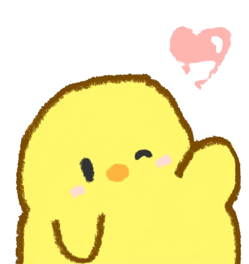
Aveces me gustaría ser un poeta
Pero no lo podré ser
Porque el poeta piensa mucho
Y yo solo pienso en usted
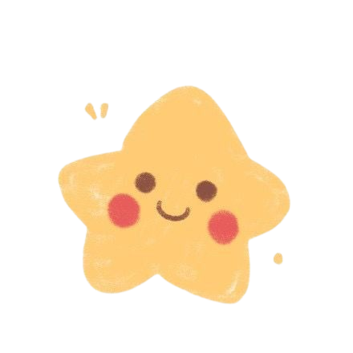
Prometo cuidarte y protegerte sin mas,
pues en ahora en adelante mi corazón es solamente tuyo
y de nadie mas
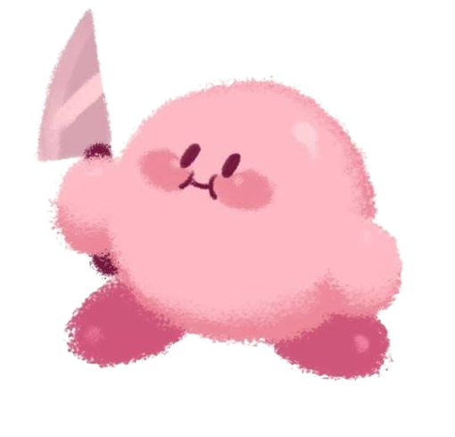
En cada final hay un nuevo comienzo,
Permíteme enamorarte, sin atisbo de despecho
Renovemos nuestro amor, sin mirar atrás,
Y juntos crearemos un futuro lleno de paz
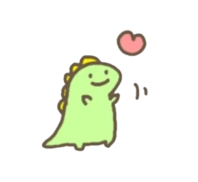
Anoche estuve viendo las estrellas
Imaginándome junto a ti
Eran tan hermosas aquellas
Que no me pude ver sin ti
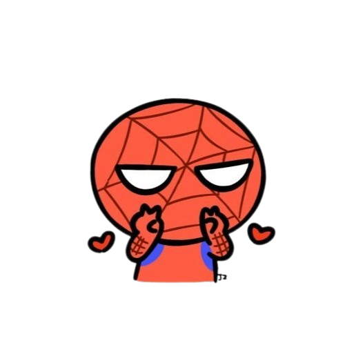
Se que cometi muchos errores en el pasado pero si se me presentara otra oportunidad
estoy por seguro que no se volverian a repetir jamas, las cosas no pasan en vano, no sin dejar antes un
recuerdo del pasado cometido, siempre habra una leccion aprendida en cada cosas
y yo aprendi la mia.
Aunque tampoco forazare algo que no es sabes, no soy desesperado ni nada por el estilo
, pues quisiera dejar eso en claro, no quiero ponerte "comprometida", eso es para nada mi intencion
y es lo que menos quiero, solo me gustaria expresarte mis pensamientos, soltarlo todo. Pero no tengo mucho mas que decir de eso, aun que lo aclare muchas veces disculpame,
soy un chico al que siempre le a dado miedo expresarse sin preparar algo, realmente realmente soy muy timido, en secundaria me di cuenta,
que ser timido no me llevaria nada y asi no progresaria socialmente, asi que me force a crearme una "capa"/"mascara" como quieras decirle
para socializar, siempre eh sido muy desconfiado y temeroso, puesto que de niño cualquier cosa que me gustaba hacer
me hacian menos, me hacian bullying por escribir cosas romanticas en primaria, todos me hacian el feo, con todo lo que hacia, sonara sin sentido por cosas asi pero
de ahi me di cuenta que si yo preparaba planes sobre como iba actuar y posibles escenarios no me afectaria el resultado, manipulando las situaciones para no dañarme o lastimarme
de nuevo. Con esto me refiero, disculpame si repito las cosas, no me expreso bien, esto lo hago con jaja sonara super cliche,
pero lo estoy haciendo con mi verdadero "yo"...
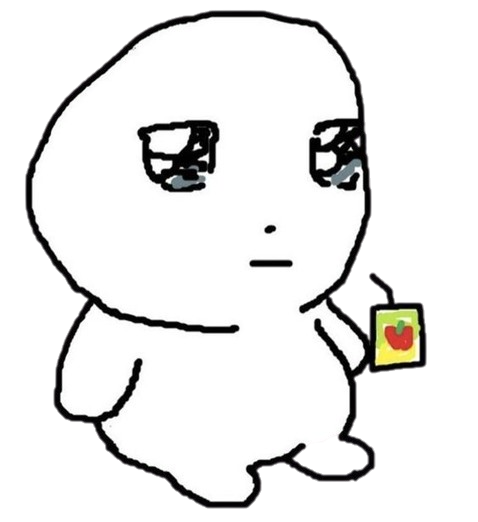
Por que lo hago?
Bueno, un sabio una vez dijo:
"Cuando realmente quieres a alguien
incluso si hay un millon de razones
para dejarlo, todavia buscas una
razon para quedarte"
Esto significa muchas cosas y tantos sentimientos en una sola cosa y una de ellas que interpretarlo
y la que mas me gusto es este significado de ello :
En el amor verdadero, persiste el anhelo,
aunque haya razones para dejarlo atrás,
siempre se busca una razón para quedarse,
cuando se ama con todo el corazón y más.
Yo no se si seas mi amor verdadero, mi alma, un amor pasajero, o como quieras decirle a las demas cosas
, por que si me lo preguntas, pues es que realmente no lo se, soy muy joven para decirte "No es que vanessa eres el amor de mi vida"
"Eres mi alma gemela" "Mi media naranja" etc etc. Soy muy joven para interpretar las cosas que ni quiera yo comprendo totalmente
no puedo asegurarte el "Es que te amare por siempre" "Te querre para siempre y por siempre" y no lo digo que suene como algo
negativo, lo digo de la forma que yo puedo llamarte de mil maneras pero decir palabras que no conozco su significado no es justo,
ni para ti ni como para mi, solo se que eres importante y especial para mi, aun no comprendo tanto del amor, relaciones como para decirte eso
o para mencionarlo, pero lo unico que si se con claridad es lo que te acabo de decir, eres importante para mi y es lo unico
que puedo decirte con seguirdad, eres especial y se que en un futuro lo seguiras siendo, eres una de esas personas que no olvidaras en la vida, llamame
exagerado o como gustes pero digo la verdad, eres alguien que independientemente que pase te llevare en mi mente, no todos los dias pero si te recordare muchas veces.
Otras cosas
Yo se que apareci de la nada despues de mucho o bueno "mucho" tiempo, y que pueda que parezca super raro,
y que yo en tu lugar Tambien
estaria tipo
algo asi
Y es totalmente comprensible, por que sea cual sea la razon, circunstancia o cualquier otra justificacion, fui yo el que se alejo, teniendolo todo,
y puede que tal vez ni si quiera lo recuerdes, de hecho creo que tambien me desanimo al hacerlo al pensar que el unico se acuerda soy yo, puesto que me dices que se
te olvidan las cosas del pasado y es complicado que se te quede algo, pero es totalmente comprensible
Esto lo estoy haciendo estando enfermo, de hecho por eso no te e contestado aun por instagram y lamento eso, quiero darte una sorpresa pero todos los videos de youtube que veo, no me enseñan
lo que quiero o ni si quiera tocan los temas, entonces me toco leer mucho para aprender porquito de esto
La primera pagina que hice que te mostra no la hice yo solo, estuve viendo un tutorial a la par por que era el unico bueno en español jaja, pero esta
es mi primera pagina hecha 100% por mi, se que lo dije ya antes pero se que no esta decente, y no esta a la altura pero realmente queria hacerlo y queria hacerlo con lo que se ahora
Ya que esto no es primordial en mi carrera hasta mas adelante, pero si en un futuro llego a estar a tu lado y te gustan las cosas asi, podria hacerte una 1000 veces mejor
y mucha mas decente
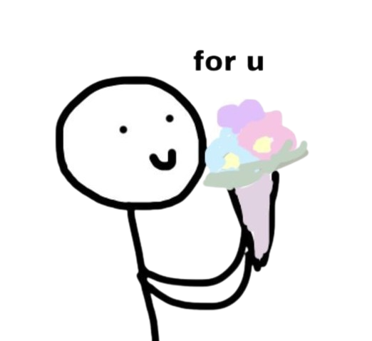
Tengo tantas cosas que decirte, contarte que aun que tenga tiempo, no podria acabar, independientemente de como quedemos despues de que leas todo esto o jaja
si lo llegas a ver
porque existe la posibilidad de que lo mandes a trln, pero esta vez no me quiero basar en probabilidades, solo quiero hacer las cosas sin pensar de mas.
Como te decia, independientemente de como terminemos despues de que veas la pagina
, seguiras siendo muy especial para mi e incluso aun que pasen los años estoy seguro que seguira siendo asi
Pero en el fondo se que tu ya superaste las cosas y quiza ya ni me extrañas, pero yo aun yo te extraño
Realmente me queria quedar en tu vida y hacer las cosas bien, queria hacer muchas cosas
a tu lado, pero acepto que tuve errores y tome malas decisiones
, y como te dije se que jamas me olvidare de ti
Y si la respuesta llega a ser algo negativo dejame decirte unas cosas, te digo puede que tal vez este revuelto todo
te pido que me perdones todo jaja, escribo lo que se me va ocurriendo y tengo diferentes estapas
Te agradezco de los momentos bonitos que comparti contigo, que son especiales para mi
Esos recuerdos aun siempre me hacen sonreir y al final yo estare bien despues de todo, la vida continua anque no estes conmigo, te deseo lo mejor de la vida
Que seas feliz pues te mereces muchas cosas bonitas y mas, y que encuentres a alguien que te de el cariño que tal vez yo no te di